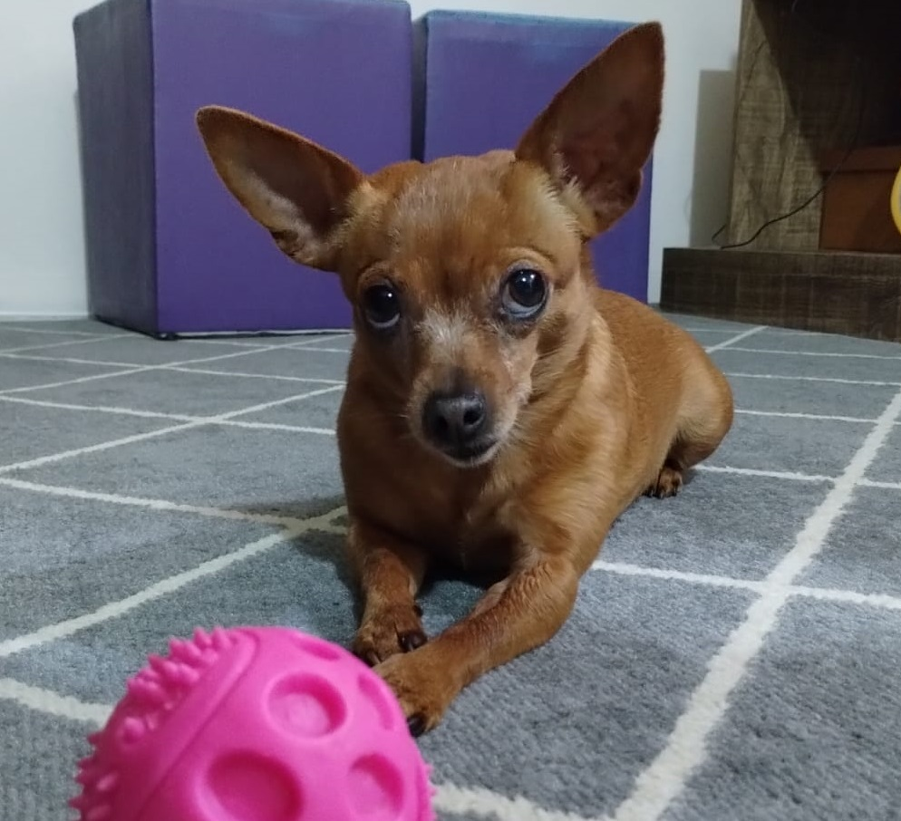
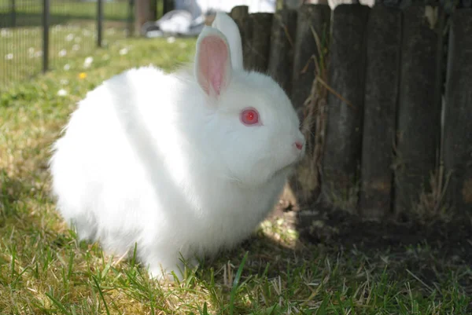

Tisco, 4 anos-São José/SC
Frida-Biguaçu/SC

Maia, 5 anos-Floripa/SC

Cacau-Porto Alegre/RS
Amora-Joinvile/SC

Miti, 18 anos-Porto Alegre/RS
Pituca-Capão da Canoa/RS

Neve/São José/SC
Nome e idade do Pet